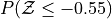
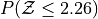
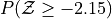
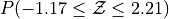

Normal Distribution#
Introduction#
Sketch a Standard Normal distribution in the x-y plane. Shade in the areas indicated in the problems below. Label the axes. Label each area with the percentage of the distribution that corresponds to the shaded region. Use a Z Table to find the exact percentage.


What is the relationship between parts a and b, and parts c and d? What characteristic of the Standard Normal distribution is being shown here?




Sketch a Standard Normal distribution in the x-y plane. Shade in the areas indicated in the problems below. Label the axes. Label each area with the percentage of the distribution that corresponds to the shaded region. Use a Z Table to find the exact percentage.


What is the relationship between parts a, b and c? Explain the result graphically.


Sketch a Standard Normal distribution in the x-y plane. Find the values of Z which correspond to the areas given below. Shade in the areas and label the axes with the value found. Use a Z Table to solve the problem.
0.90
0.75
0.5
0.25
0.10
The Empirical Rule
Since the Z-Table is the cumulative distribution function for the Standard Normal distribution, The Empirical Rule can be derived through a Z-table. Recall the Empirical Rule states,
This can be stated more precisely in terms of the Z distributions as follows,
The Empirical Rule is an approximation, meant for quick calculations. It is not exact, as you will soon discover.


A.P. Exam Practice#
2004, Free Response, Form B, #3
Trains carry bauxite ore from a mine in Canada to an aluminum processing plant in northern New York state in hopper cars. Filling equipment is used to load ore into the hopper cars. When functioning properly, the actual weights of ore loaded into each car by the filling equipment at the mine are approximately normally distributed with a mean of 70 tons and a standard deviation of 0.9 ton. If the mean is greater than 70 tons, the loading mechanism is overfilling.
If the filling equipment is functioning properly, what is the probability that the weight of the ore in a randomly selected car will be 70.7 tons or more? Show your work.
Suppose that the weight of ore in a randomly selected car is 70.7 tons. Would that fact make you suspect that the loading mechanism is overfilling the cars? Justify your answer.
2017, Free Response, #3
A grocery store purchases melons from two distributors, J and K. Distributor J provides melons from organic farms. The distribution of the diameters of the melons from Distributor J is approximately normal with mean 133 millimeters (mm) and standard deviation 5 mm.
For a melon selected at random from Distributor J, what is the probability that the melon will have a diameter greater than 137 mm?
Distributor K provides melons from nonorganic farms. The probability is 0.8413 that a melon selected at random from Distributor K will have a diameter greater than 137 mm. For all the melons at the grocery store, 70 percent of the melons are provided by Distributor J and 30 percent are provided by Distributor K.
For a melon selected at random from the grocery store, what is the probability that the melon will have a diameter greater than 137 mm?
Given that a melon selected at random from the grocery store has a diameter greater than 137 mm, what is the probability that the melon will be from Distributor J?
2011, Free Response, #1
A professional sports team evaluates potential players for a certain position based on two main characteristics, speed and strength.
Speed is measured by the time required to run a distance of 40 yards, with smaller times indicating more desirable (faster) speeds. From previous speed data for all players in this position, the times to run 40 yards have a mean of 4.60 seconds and a standard deviation of 0.15 seconds, with a minimum time of 4.40 seconds, as shown in the table below.
Mean |
Standard Deviation |
Minimum |
|
Time to run 40 yards |
4.60 s |
0.15 seconds |
4.40 s |
Based on the relationship between the mean, standard deviation, and minimum time, is it reasonable to believe that the distribution of 40-yard running times is approximately normal? Explain.
Hint
Think about the Empirical Rule!
Strength is measured by the amount of weight lifted, with more weight indicating more desirable (greater) strength. From previous strength data for all players in this position, the amount of weight lifted has a mean of 310 pounds and a standard deviation of 25 pounds, as shown in the table below.
Mean |
Standard Deviation |
|
Amount of weight lifted |
310 lb |
25 lb |
Calculate and interpret the z-score for a player in this position who can lift a weight of 370 pounds.
The characteristics of speed and strength are considered to be of equal importance to the team in selecting a player for the position. Based on the information about the means and standard deviations of the speed and strength data for all players and the measurements listed in the table below for Players A and B, which player should the team select if the team can only select one of the two players? Justify your answer.
2013, Free Response, #3
Each full carton of Grade A eggs consists of 1 randomly selected empty cardboard container and 12 randomly selected eggs. The weights of such full cartons are approximately normally distributed with a mean of 840 grams and a standard deviation of 7.9 grams.
What is the probability that a randomly selected full carton of Grade A eggs will weigh more than 850 grams?
The weights of the empty cardboard containers have a mean of 20 grams and a standard deviation of 1.7 grams. It is reasonable to assume independence between the weights of the empty cardboard containers and the weights of the eggs. It is also reasonable to assume independence among the weights of the 12 eggs that are randomly selected for a full carton.
Let the random variable X be the weight of a single randomly selected Grade A egg.
What is the mean of X?
What is the standard deviation of X ?